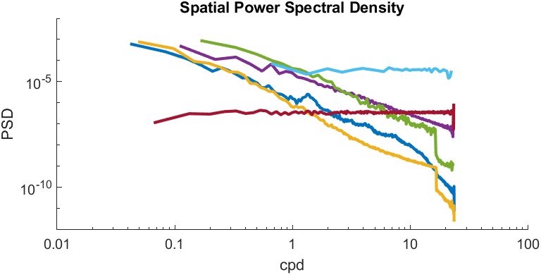
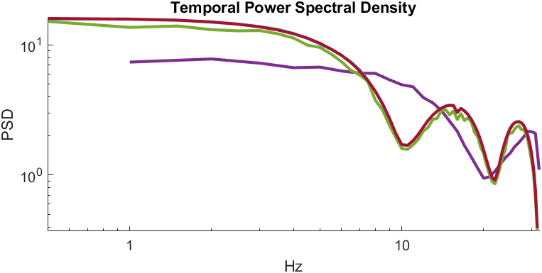
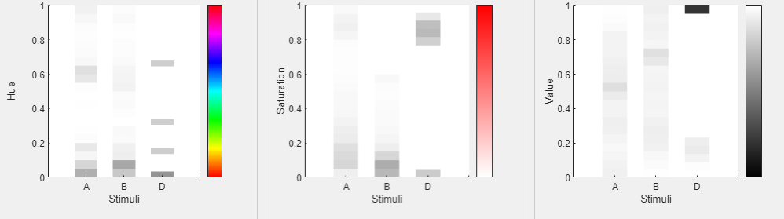

The Analysis function allows users to analyze and compare different stimuli (CFS-Crafter-Mask, CFS-Crafter-Image or image file in the format of .png, .jpg, .jpeg & .tiff). These stimuli can be added by clicking the Add Stimuli button.
Note that the selected image file will first be converted to a CFS-Crafter Image using the screen_info entered in the main interface. Hence it is important to ensure the accuracy of the screen information.
The analysis in CFS-Crafter is divided into multiple parts. Users can select which analysis is necessary to decrease the processing time. The speed of the analysis will depend on the number of stimuli, the type of stimuli (sequences or images), and the type of analysis selected.
Basic Information includes:
This shows whether the selected stimuli are RGB-colored or grayscale. (Images will all be shown as RGB-colored)
Number of frames
The average entropy for grayscale stimuli. Notice for RGB-colored stimuli, the stimuli are firstly converted to grayscale and then the entropy is calculated.
Root-Mean-Square (RMS) Contrast and average luminance (intensity) of the stimuli. For details on RMS Contrast & Mean Luminance, click here.
The edge density is calculated based on the selected edge detection method and threshold. For details on edge detection click here.
Frequency analysis will provide PSD (power spectral density) plot for spatial frequency and temporal frequency.
For spatial frequency analysis, the PSD is calculated based on the radial average power spectral density after 2D fast Fourier transform. (RGB-colored stimuli are first converted to grayscale before undergoing analysis.)
For temporal frequency analysis, a similar process is performed. Note that only CFS-Crafter-Mask will be subjected to temporal frequency analysis; CFS-Crafter-Image and standard image files will be ignored.


Color analysis ignores grayscale stimuli. For RGB stimuli, the analysis consists of two parts: descriptive statistics and probability density plots.
As seen in Fig. 2, the x-axis shows each stimulus subjected to analysis. The y-axis shows the properties (Hue, Saturation, and Value respectively), and the shade of the bar at each y-value corresponds to the probability density of each stimulus at the corresponding value (the legend bar on the right of each graph shows the feature corresponding to each value), with a darker shade corresponding to a higher density.

Based on the type of analysis selected by the user, the results will be shown in a separate interface for the user to view.
Graphs can be saved by using the right-click context menu. The user can also save the analysis results as a CFS-Crafter-Analysis-Results .mat file, which contains the following information for each stimulus:
All information included in the Basic Information table
Frequency (x value) & PSD (y value) for Spatial & Temporal PSD plot.
HSV array for each stimulus, bin_counts, bin_edges, and descriptive statistics (mean, median, mode, and range) for hue, saturation, and value respectively.